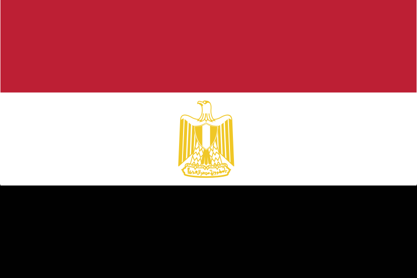
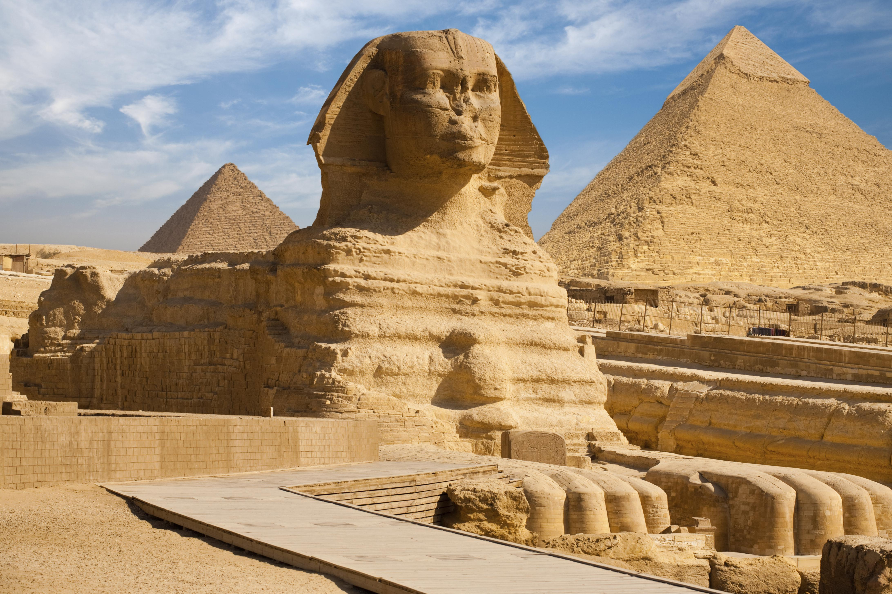

A língua oficial é o árabe egípcio, um dialeto amplamente compreendido em todo o mundo árabe devido à popularidade do cinema e da música do país. A grande maioria da população pratica o Islamismo (principalmente sunita), existindo também uma importante minoria cristã coptas. As chamadas para a oração e as festividades religiosas, como o mês sagrado do Ramadão, marcam o ritmo da vida quotidiana.
A culinária egípcia é variada e baseia-se em leguminosas, vegetais e especiarias:
O Egito é frequentemente considerado o centro cultural do mundo árabe. Destaca-se na literatura por Naguib Mahfouz, o primeiro escritor de língua árabe a vencer o Prémio Nobel da Literatura. Na música, figuras como a cantora Umm Kulthum tornaram-se ícones lendários. A indústria cinematográfica do Cairo é também uma das mais antigas e influentes da região.
O artesanato egípcio preserva técnicas antigas, destacando-se a produção de papiro, cerâmica, tapetes e trabalhos em metal nos souks (mercados tradicionais), como o famoso Khan el-Khalili. A sociedade egípcia valoriza a família, o respeito pelos mais velhos e a hospitalidade calorosa aos visitantes.
| Indicador | Informação |
|---|---|
| Língua Oficial | Árabe |
| População | 110 milhões de habitantes |
| Área Total | 1.000.000km² |
| Moeda | Libra Egípcia (EGP) |
| Governo | República Semipresidencial |
| Clima Principal | Desértico (quente e seco) |
| Total | 28 |

